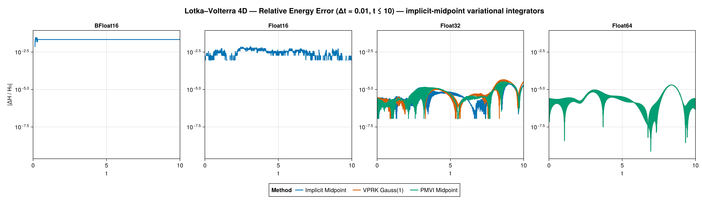
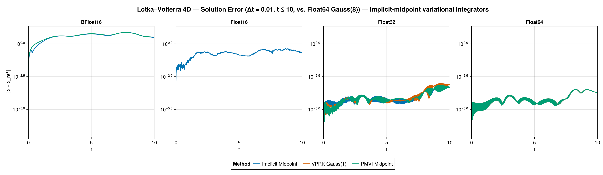
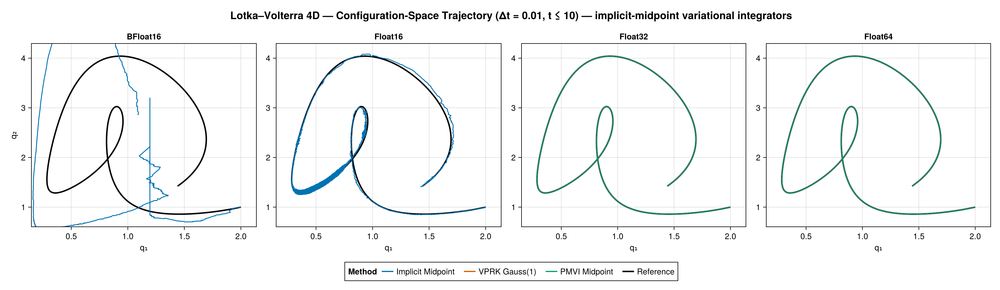
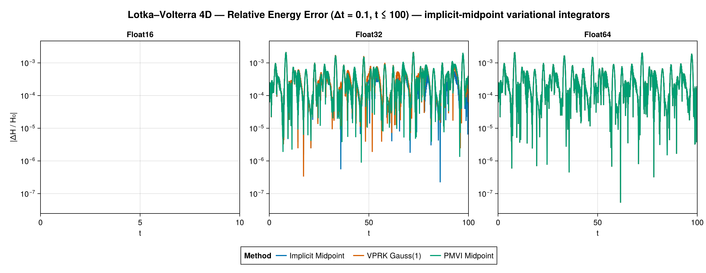
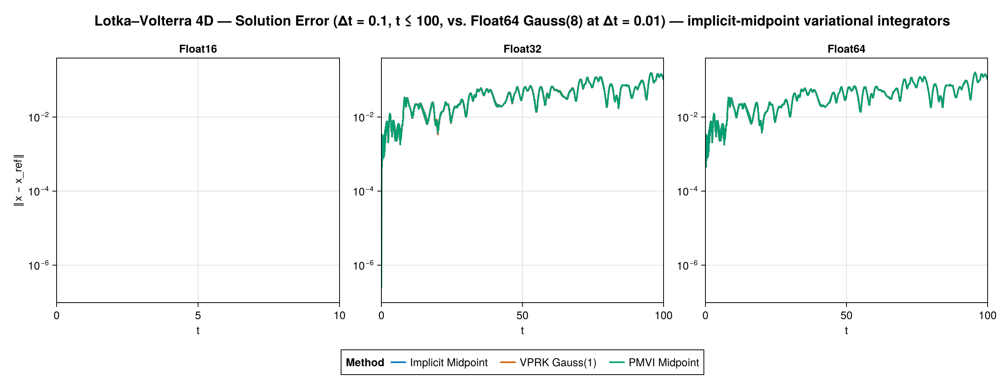
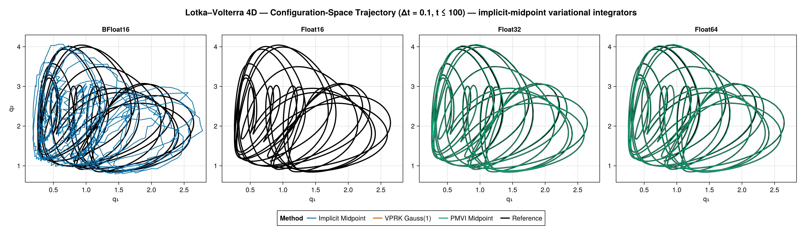

Lotka–Volterra 4D
The 4D Lotka–Volterra system is, like the 2D one, a degenerate Lagrangian system. It is built from the LotkaVolterra4dLagrangian module (an EulerLagrange-generated Lagrangian of the form $L = \tfrac12 (\log q)^T A\, \dot q / q + q^T B\, \dot q - H(q)$) as a LODE, using the quasi-canonical reduced gauge ($A =$ A_quasicanonical_reduced, together with the exact one-form $B$) so that the discrete degenerate system is non-singular.
As for the 2D case, only variational / implicit-midpoint methods apply. The comparison here uses three of them:
- Implicit Midpoint,
- VPRK Gauss(1),
- PMVI Midpoint.
CMDVI is omitted for the 4D system: on this 4D degenerate Lagrangian its Newton/DogLeg iterate leaves the positive orthant and the nonlinear solve breaks down (singular Jacobian for the reduced gauge, divergence for the others), so it cannot complete the integration. The other three methods integrate it without trouble.
There is no closed-form solution; the solution error is measured against a Float64 Gauss(8) reference. All three methods are type-pure at every precision.
Short scenario (Δt = 0.01, t ≤ 10)
Energy error

At Float32 and Float64 the three variational integrators conserve energy well; at Float16 the VPRK and PMVI solves fail (NaN directions or log-domain errors from the degenerate Lagrangian), while implicit midpoint still runs at the short step.
Solution error

Against the Gauss(8) reference the three integrators keep a small trajectory error at Float32/Float64; at Float16 only implicit midpoint survives to contribute.
Configuration-space trajectory

Coarse scenario (Δt = 0.1, t ≤ 100)
Energy error

At the coarser step and longer horizon the differences between the variational integrators, and the effect of precision on their long-time energy behaviour, are accentuated.
Solution error

Over the longer horizon the trajectory error against the reference likewise separates the three integrators at the coarse step.
Configuration-space trajectory
